Chapter 9 Playback
👉 Playback the Vibe show through the most flexible sets of physical and virtual controllers, sliders, knobs and buttons.
This chapter deals with the assignment of Qlists and Scenes to the Controllers and the management of playback settings.
Chapter index:
- 9.1 Physical Controllers
- 9.2 Virtual Controllers
- 9.3 Controller Keys
- 9.4 Controller Configuration
- 9.5 Live Controller
- 9.6 Rate
- 9.7 Snap
- 9.8 Macro
- 9.9 Timeline
9.1 Physical Controllers
Playback is done with Controllers, that can be both physical or virtual.
Controllers are divided into different types, characterized by the quantity of buttons, faders and knobs available.
Vibe has five controller types, with the following quantities and numbering:
- A/B Crossfader: Non-Motorized pair of Sliders with dipless crossfade and Two buttons
- 1 Non-motorized A/B dipless crossfader - Numbered 401
- Slider: Motorized Slider Controllers with Three buttons
- 30 pages of 100 Motorized Sliders - Numbered 1.1 ⟶ 30.100
- Qkey: Pressable knob or Single button Controllers
- 30 pages of 100 Qkeys - Numbered 1.101 ⟶ 30.200
- AuxKey: Single button Controllers
- 30 pages of 100 Auxkeys - Numbered 1.201 ⟶ 30.300
- Global Slider: Non-Motorized Slider Controllers
- 100 Non-motorized Global Sliders - Numbered 301 ⟶ 400
👉 Controllers are numbered from right to left to facilitate continuous numbering with physical and virtual controller wings.
Controllers are used to playback or execute a number of stored objects:
Qlists and Cues
Chasers
Scenes
Submasters
Groupmasters
Libraries
Macros
The following samples explain how to assign a Qlist to any controller, but the syntax to assign any other stored object is the same.
Assign a Qlist to a Controller:
[QLIST] [#] OR Object Softkey
[HERE] to any button of the target controller.
👉 Blank Qlists may also be assigned to any controller.
👉 If a non existing Qlist is assigned, it will be created.
Assign a range of Qlists to consecutive Controllers:
[QLIST] [#] → [QLIST] [#]
[HERE] to any button of the controller that will be the first of the range.
Assign a Single Cue to a controller:
[QLIST] [#] [CUE] [#]
[HERE] to any button of the target controller.
Controller Color Codes
The objects assigned to any controller are identified by the Controller Color Codes, that are referred to the physical buttons’ LEDs and to the virtual controllers’ background.
Controller color coding from [SELECT] Master Controller:
- Cyan = Initial Hard Value
- Blue = Hard Value Changing Upward
- Green = Hard Value Changing Downward
- Purple = Tracked Value
- Red = Redundant Block (may be released with {Unblock})
- Magenta = Skip Value
Controller color coding from non-[SELECT] Master Controller:
- Yellow = Output from a Qlist, Cue, Scene
- Submaster or Group Master =

Controller Display and Backlit Controller Key’s color coding:
- Top Button:
- Dim White = Unloaded
- White = Loaded
- Green = Qlist, Cue Active
- Red = Chaser Active
- Yellow = Scene Active
- Blue = Sub or Group Master @ FL
- Any of above Flashing = In Progress
- Middle Button:
- Dim White = Unloaded
- White = Loaded
- Blue = Select (Master Controller)
- Flashing Red = Back
- Flashing Yellow = Pause
- Bottom Button:
- Dim White = Unloaded
- White = Loaded
- Blue = Select (Master Controller)
9.1.1 Grand Master + BlackOut
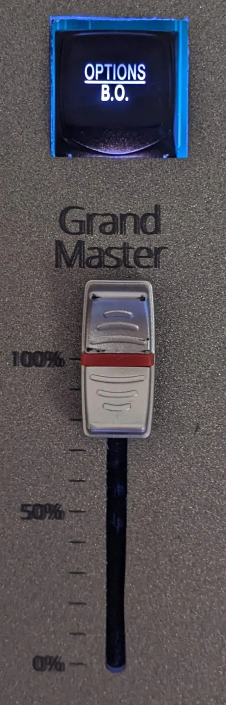
The main controllers of the console are the Grand Master, or GM, and the BlackOut, or B.O.
The Grand Master proportionally limits the output values of all the DMX addresses that have a Dimmer parameter patched.
The BlackOut toggles at Full or Zero the output values of all the DMX addresses that have a Dimmer parameter patched.
The Grand Master slider and the BlackOut button are the only “special” controllers that cannot be customized; their functions cannot be changed and they cannot have any object assignment.
The Grand Master slider and the BlackOut button have priority over the whole system, including all the Playback controllers and also the Editor.
9.1.2 A/B CrossFader
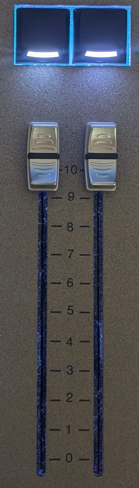
The Manual Crossfader set is a controller with 2 non-motorized sliders and 2 buttons.
The default action of the right button is Go
The default action of the left button is Hold/Back
The A/B CrossFader Pair is provided for manual “Theater Style” playback of cues.
By default the fader on the left will control dimmer parameters fading in.
By default the fader on the right will control all other values, including the dimmer that are fading out.
Parameter values that match will not dip even if the A and B are at different levels.
The A/B Controller Actions popup allows to set if the sliders’ behaviour should be Splitted (Separated) or Merged (In/Out).
9.1.3 Slider
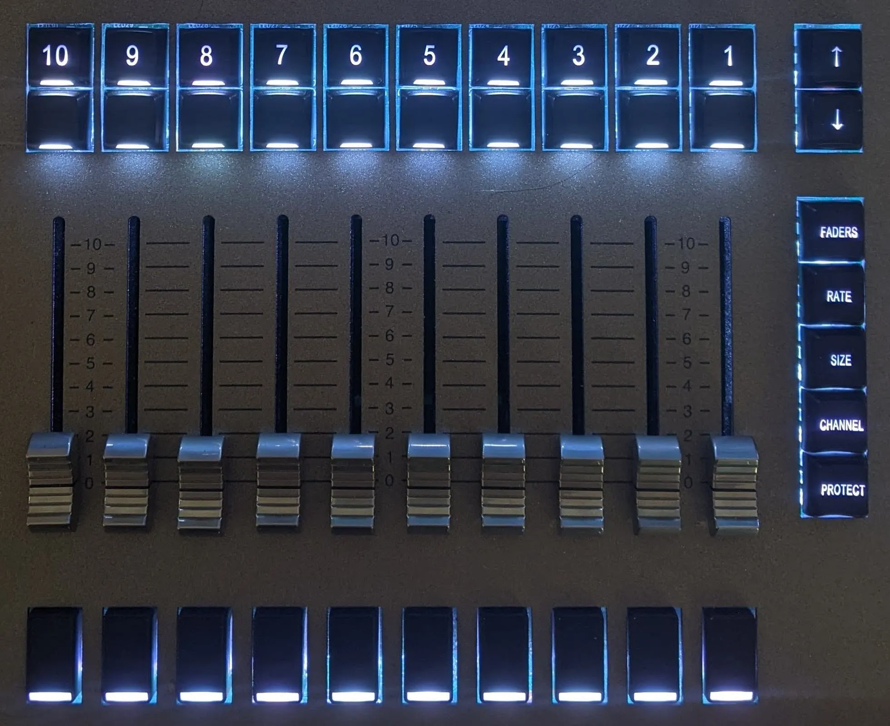
- The Slider set is a controller with 1 motorized slider and 3 buttons.
When a Qlist is assigned:
By default the fader will control intensity parameters
The default action of the top button is Go
The default action of the mid button is Hold/Back
The default action of the bottom button is Flash
When a Scene is assigned:
By default the fader will control all parameters
The default action of the top button is Go
The default action of the mid button is Hold/Back
The default action of the bottom button is Flash
When a Submaster is assigned:
By default the fader will act as a submaster
The default action of the top button is Group Select
The default action of the mid button is Group Deselect
The default action of the bottom button is Flash
9.1.4 Qkey
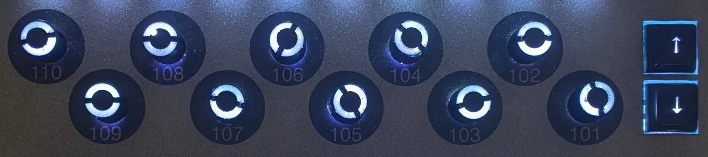
- The Qkey set is a controller with 1 knob or slider (virtual only) and 1 single button.
When a Qlist is assigned:
By default the knob will control intensity parameters
The default action of the button is Go
When a Scene is assigned:
By default the knob will control all parameters
The default action of the button is Go/Release
When a Submaster is assigned:
By default the knob will act as a submaster
The default action of the button is Group Select
9.1.5 AuxKey
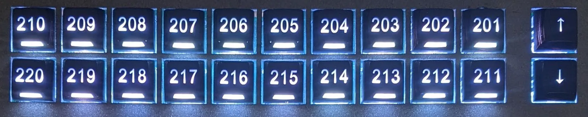
- The Auxkey set is a controller with 1 slider (virtual only) and 1 single button.
When a Qlist is assigned:
By default the knob will control intensity parameters
The default action of the button is Go
When a Scene is assigned:
By default the knob will control all parameters
The default action of the button is Go/Release
When a Submaster is assigned:
By default the knob will act as a submaster
The default action of the button is Group Select
9.1.6 Global Slider
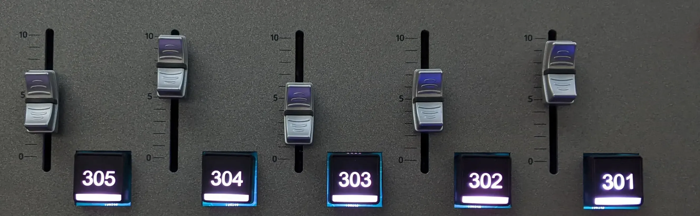
- The Global Slider set is a controller with 1 non-motorized slider and 1 button.
When a Qlist is assigned:
By default the fader will control intensity parameters
The default action of the button is Go
When a Scene is assigned:
By default the fader will control all parameters
The default action of the button is Go
When a Submaster is assigned:
By default the fader will act as a submaster
The default action of the button is Group Select
9.2 Virtual Controllers
All the controllers can be added on the layout as Virtual Controllers.
Any controller can be both physical and virtual, and the list of all the Virtual Controller Views available can be found in the Playback Views submenus.
Virtual Controllers may be added as a single part (fader or button), as complete set, or in sets of 5 consecutive controllers.
The Virtual Controllers may be added to the Vibe Layout, moved, assigned and resized as preferred.
Vibe software makes no distinction between physical and virtual controllers, this allows the system hardware to be virtually scaled.
9.2.1 Grand Master + BlackOut
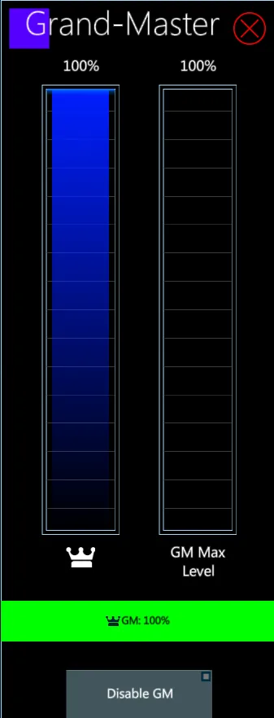
Open the virtual Grand Master with [SHIFT] + [B.O.]
In this view the Grand Master level can be set, it can be Disabled, and it also can be set to operate on a user-defined range, from 0%-100% to 0%-200%.
The Proportional Grand Master Level can be used for example in touring productions, where the rehearsal and the lighting programming may be done in a medium-sized venue for a show that will be performed both in smaller and bigger stages. Setting the G.M. at 100% with a level range up to 200% will allow the operator to keep enough margin to light up the bigger venues without need to add more fixtures.
The Disable GM button completely inhibits the Grand Master, while it is possibly to exclude form the Grand Master just specific DMX addresses. This is done via the Address View by editing the Address Properties.
A Virtual BlackOut button can be added to the layout by selecting it from the Single Button popup into the Program Views menu.
9.2.2 A/B Crossfader
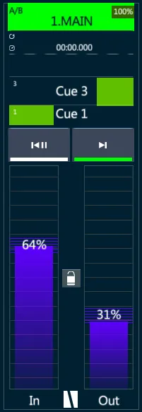
The Virtual A/B Crossfader has a Locker between the sliders used to set if the sliders’ behaviour should be Splitted (Separated) or Merged (In/Out).
9.2.3 Slider
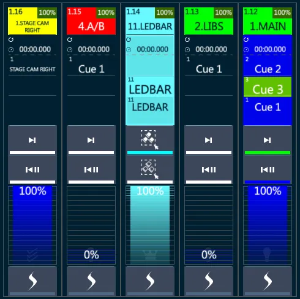
Virtual Sliders show the controller’s page and number, the name and number of the content loaded, the current and next Cue name and number, the fader level, and the icons of the functions assigned to the buttons and faders.
9.2.4 Qkeys
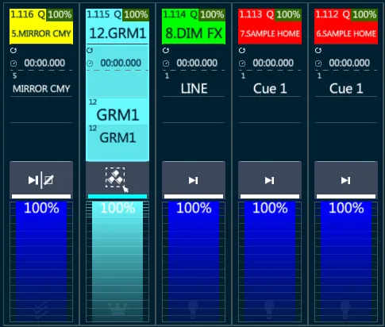
Qkeys can have a virtual button and a virtual fader, or a virtual set of fader and button, independently from the corresponding physical controller’s hardware (single button or knob).
Virtual QKeys show the controller’s page and number, the name and number of the content loaded, the current and next Cue name and number, the fader level, and the icons of the functions assigned to the buttons and faders.
9.2.5 Auxkey
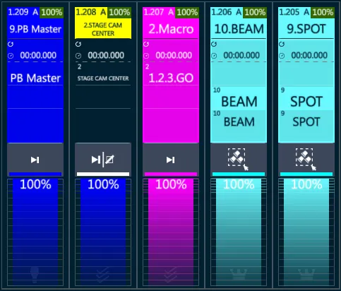
Auxkeys can have a virtual button and a virtual fader, or a virtual set of fader and button, independently from the corresponding physical controller’s hardware (single button).
Virtual AuxKeys show the controller’s page and number, the name and number of the content loaded, the current and next Cue name and number, the fader level, and the icons of the functions assigned to the buttons and faders.
Auxkey pages can be switched from the Smart Screen’s Programming View with the virtual up/down keys.
9.2.6 Global Slider
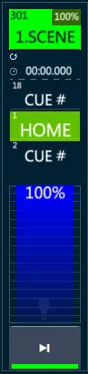
Global Sliders can have a virtual button and a virtual fader, or a virtual set of fader and button, independently from the corresponding physical controller’s hardware (the physical global sliders are only on the main Vibe console, but the virtual global sliders can be added to any layout).
Virtual Global Sliders show the controller’s page and number, the name and number of the content loaded, the current and next Cue name and number, the fader level, and the icons of the functions assigned to the buttons and faders.
9.3 Controller Keys
9.3.1 Master Keys
The Master Controller is the main controller to which the Master Keys and the syntax shortcuts are referred to.
One of the controllers is always assigned as the Master Controller.
Not more than one controller can be assigned as the Master Controller at the same time.
Any Controller may become the Master Controller at any time.
To assign a controller as the Master, press [SELECT] [HERE] to any of the buttons of the controller.
The LED color of the second button and the background of the virtual controller that identify the Master Controller is dark blue.
The A/B is only linked to the Master Controller if the [SELECT] is assigned to A/B.
- The Master Controller is linked to the Master Controller Keys.
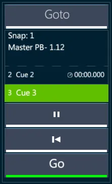
The Master Keys have 4 buttons:
[GO] - Initiates a forward timed fade between cues in the selected Qlist using the Cue Time.
[BACK] - Initiates a backward timed fade to the previous cue using the Default Back Time.
[HOLD] - Pauses the progress of a fade.
Pressing [HOLD] again resumes the transition.
Pressing [GO] will resume the transition as well.
Pressing [BACK] will fade to the previous cue.
[GOTO] - Advances to the specified cue using the GOTO Time.
Master shortcuts
There are some syntax shortcuts used to speed up the programming that are always referred to the Master Controller. The most common ones are:
[STORE] [STORE] - stores a Cue to the first free position of the Qlist loaded on the Master.
[STORE] [ENTER] - stores a Cue to the first free position of the Qlist loaded on the Master.
[CUE] [#] [STORE] - stores a Cue # to the Qlist loaded on the Master.
[CUE] [#] [UPDATE] - updates the Cue # of the Qlist loaded on the Master.
[CUE] [#] [EDIT] or [TEXT] or [TIME] or any other command - applies the command to the Cue # of the Qlist loaded on the Master.
[UPDATE] - opens the update popup, where the Master Controller can be assigned as Source Filter.
[GRAB] - opens the Grab popup, where the Master Controller can be set as Filter.
GOTO Commands
GOTO commands can be performed through different syntax depending on the user preference.
GOTO applies a GO command to a Cue of the Qlist that is currently on the Master controller, using the Default GOTO Time specified in the Timing settings:
[GOTO] [#] [ENTER]
[GOTO] [#] [GO]
More GOTO syntax options are available to define a specific Time or a different Qlist.
GOTO a cue on the Master Controller using system GOTO Time:
- [CUE] [#] [GOTO]
GOTO a cue on the Master Controller using a specified Time:
- [CUE] [#] [TIME] - Enter time value [GOTO]
GOTO a cue on the Master Controller using system Cue Time:
- [CUE] [#] [TIME] [GOTO]
GOTO a cue on the Master Controller using Goto Cue popup:
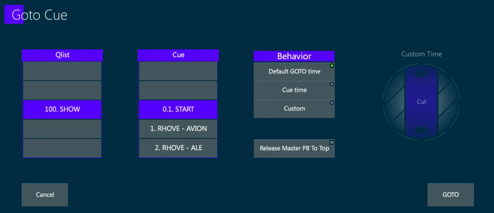
Press [GOTO] - Goto Cue popup will open.
Select {Qlist} if not the current Qlist on the Master Controller.
Select the {Cue}.
Select behavior.
{Default GOTO time} - Uses system default GOTO Time.
{Cue Time} - Uses Cue’s recorded time.
{Custom} - Set GOTO time using the Custom Time wheel or tap the center of the wheel until it turns red and set the time value from the keypad.
{Release Master PB on Top} - Releases the Master Controller.
- Tap Apply or press [ENTER] or [GO] to close the popup and execute the GOTO.
If a Qlist other than the one that is currently on the Master Controller is selected, that Qlist will replace the current one on the Master Controller.
GOTO a cue NOT on the Master Controller:
- [QLIST] [#] [CUE] [#] [GO] (Controller must have a GO button assigned).
GOTO Cue Zero (Cue Zero is essentially {Release PB}):
- [CUE] [0] [GOTO]
GO out of sequence directly to a Cue on the Master Controller (in cue time):
- [CUE] [#] [GO]
9.3.2 Operation Keys
Operational Keys allow to manage the controllers with basic and fundamental operations.
The Operation Keys are physical buttons on the panel and can be added as virtual a view on the layout.
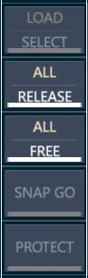
The Operational Keys are: Select, Load, Release, Free, Protect
[Select] - Sets the target controller as the Master.
[Load] - Preloads a controller with a specified cue #, but does not advance to that cue.
[Release] - Releases the destination controller from affecting the stage (Turns it off).
[Free] - Unloads the content from the controller (Makes it empty).
[Protect] - Locks the system with a user defined one-time password.
[Select] [Load] [Release] and [Free] do not work with the big Master Controller buttons, only with any button on the controller that is associated with it as the [SELECT] controller.
GOTO and LOAD are used to crossfade to cues out of sequence.
By default:
GOTO immediately transitions to the specified cue in the system GOTO Time.
LOAD preloads controllers. The next [GO] will transition to the preloaded cue in Cue Time.
Select Operations
Set a target controller as the Master:
- [SELECT] [HERE] to any controller button.
The Mid and Flash buttons’ LEDs and the Virtual controller’s background become Blue.
Load Operations
Load a cue on the Master Controller:
[CUE] [#] [LOAD] [HERE] - To Controller assigned as [SELECT]
Press [GO] - On Controller assigned as [SELECT]
LOAD a cue NOT on the Master Controller:
[QLIST] [#] [CUE] [#] [LOAD] [HERE] - Qlist and Cue will be preloaded.
Press [GO] - Controller will execute loaded cue.
If a Qlist other than the one that is currently on the Controller is specified, that Qlist will replace the current one with the specified cue pending.
Release Operations
Vibe has two types of release functions, Editor Release and Controller Release. The following deals with Controller Release.
Controller Release is done using the system Release Time, as set in system default settings.
Release a controller:
- [RELEASE] [HERE] to any controller button.
Pressing Release turns the Release button Red.
Release more controllers:
- [RELEASE] [RELEASE] [HERE] [HERE] [HERE]… to any controller button.
Pressing Release two times turns the Release button flashing Red.
Release All controllers.
- [VIBE] + [RELEASE]
Free Operations
Free unloads a controller and makes it empty, but it does not delete the loaded object.
Free a controller:
- [FREE] [HERE] to any controller button.
Pressing Free turns the Free button Red.
Free more controllers:
- [FREE] [FREE] [HERE] [HERE] [HERE]… to any controller button.
Pressing Free two times turns the Free button flashing Red.
Free All controllers.
- [VIBE] + [FREE]
Protect Operations
Protect is used to prevent the console to be operated by unwanted people.
Protect uses a user defined one-time password to Lock the system, keep the password in mind and use it carefully.
To Lock the system:
- [PROTECT] [PASSWORD] (any sequence of numbers) [ENTER]
To Unlock the system:
- [PROTECT] [PASSWORD] [ENTER]
OR
- Tap on the screen, Tap [UNLOCK], insert the [PASSWORD], Tap [UNLOCK]
9.3.3 Command Keys
Command Keys allow to manage the playback of the objects on the controllers, providing “On the Fly” access to button functions not directly assigned to controllers.
The Command Keys are physical buttons on the panel and can be added as a virtual view on the layout.
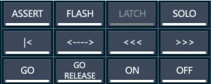
The Command Keys are:
[Assert] - Takes back control of parameters that have been “robbed” by other controllers. Assert acts as a Go command, but recalling the current Cue instead of the next one.
[Flash] - While pressed turns a controller On and at 100%.
[Latch] - Not implemented yet..
[Solo] - Turns off the intensity parameters on all controllers excluding the target controller.
[||<] - Hold/Back command on a controller. If a controller is running, pauses the controller. If a controller is static, initiates a BACK command to the previous Cue using the Back Time or the Cue Time (as set in system timing settings).
[<->] - Reverses the sequence direction (mainly used with loops and chasers).
[<<<] - Steps backwards through a Qlist ignoring time 👉 [VIBE] + [BACK] will also step backwards through the list.
[>>>] - Steps forwards through a Qlist ignoring time 👉 [VIBE] + [GO] will also step forwards through the list.
[Go] - Go command on a controller. Initiates a GO command to the next cue using the Cue Time.
[Go/Release] - First press initiates a GO command, second press initiates a RELEASE command.
[On] - Instantly turns ON a controller.
[Off] - Instantly turns OFF a controller.
👉 All Command Keys work with the same syntax, that is also common to the Free and Release Operation Keys.
Command a controller:
- [COMMAND] [HERE] to any controller button.
Pressing the Command turns the Command button Red.
Command more controllers:
- [COMMAND] [COMMAND] [HERE] [HERE] [HERE]… to any controller button.
Pressing the Command two times turns the Command button flashing Red.
Command All controllers.
- [VIBE] + [COMMAND]
9.3.4 Mode Keys
The Controller Mode keys are located at near the motorized sliders.
The motorized sliders may be assigned to any one of 4 modes.
Controller modes are are designed for “On the Fly” usage, allowing a quick modification to various rate and effect parameters.
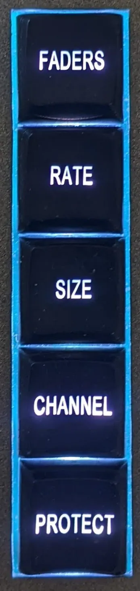
[FADERS] - Normal behavior for the Sliders, as assigned in Controller Definitions
[RATE] - The Sliders control the Rate of the fades, loops, effects, and chasers on the controller. Motorized faders will move to an optimized position of 33% allowing for proportional adjustment of a controller’s rate.
[SIZE] - The Sliders proportionally adjust the size of effects running on the controller.
[CHANNEL] - The Sliders control single DMX Addresses. Not implemented yet.
9.4 Controller Configuration
Controller Assignment
To assign any stored object to a controller, select the object (Scene, Qlist, Cue, Library, Group, Macro,…) and then tap on any controller button.
It is also possible to assign an object to a controller through the syntax:
[OBJECT[ [#] [CONTROLLER] [#] [.] [#] STORE
Making a multiple object selection will assign all of them to consecutive controllers.
Controller Options
Every controller button and slider may be fully customized to allow maximum flexibility.
When objects are initially assigned to Controllers, the buttons and sliders are configured as defined in the System Settings Defaults for Controller Actions and Controller Settings.
Each Controller may then be configured individually by pressing [SETTINGS] [HERE] to any button of the controller or by tapping the box of the Playback Status view.
9.4.1 Playback Status
Playback Status is a view that shows the current live information of the controller’s content and configuration.
The PB Status may be added to the layout as a single box, for a single controller, or as a set of five consecutive controllers, usually positioned in the lower part of the screen.
The view’s settings allow to set which target controller is shown, that may be the A/B Crossfader, a Slider, a Qkey, an AuxKey or a Global Slider.
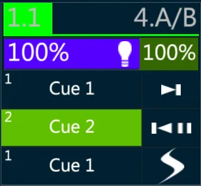
The contents shown on the PB Status are:
Controller Page and Number
Loaded object Number and Name
Loaded Object Type (based on the background color coding)
Fader Level (with Purple background)
Crossfade Rate Level (with Green background)
Previous, Current, Next Cue (for Qlists and Chasers)
Fader and Buttons Function Icons
Playback Status are also used for a direct access to the controller’s actions and settings and for the content’s properties configuration.
9.4.2 Controller Defaults
Controllers’ Defaults are divided in Actions and Settings.
To edit the defaults, open System Settings and tap on the Defaults Tab, then:
- Tap Controller Actions to open the Default Controller Actions popup
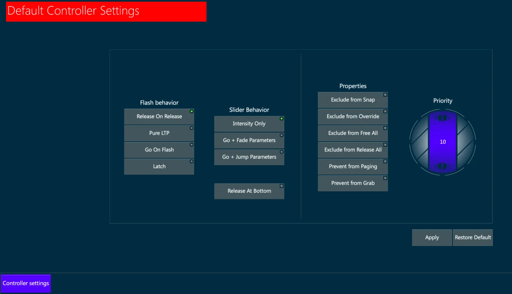
- Tap Controller Settings to open the Default Controller Settings popup
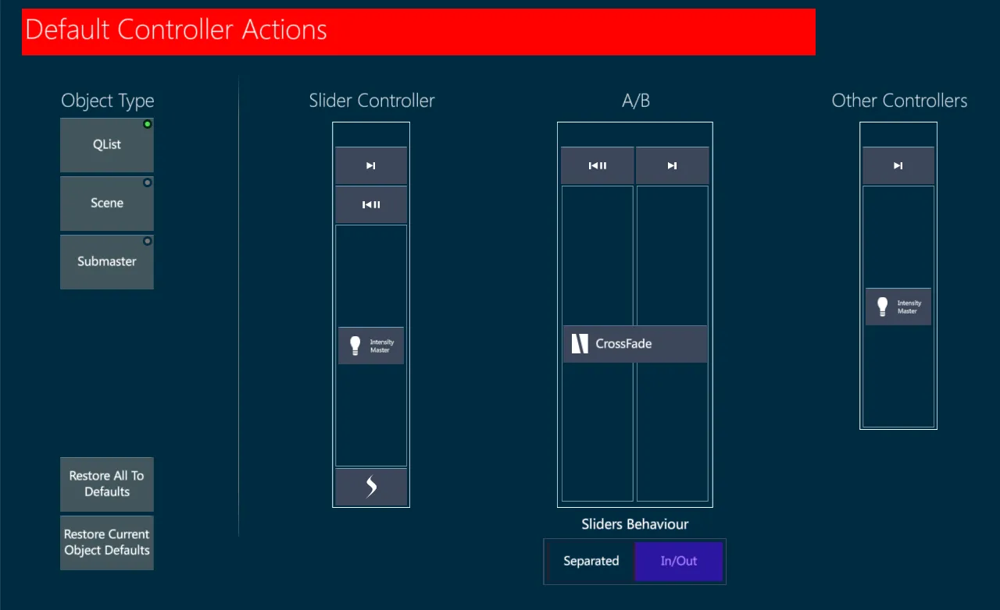
Different default Controller Actions may be configured for different controller types:
Slider Set (Fader + 3 Buttons)
A/B Crossfader (Double Fader + 2 Buttons)
Others: Qkey, Auxkey, Global Sliders (Fader + Button)
Different default Controller Actions may be configured for different object types:
Qlist
Scene
Submaster
👉 The actions configured as default controller actions can be restored for the current object or for all the objects.
9.4.3 Controller Actions
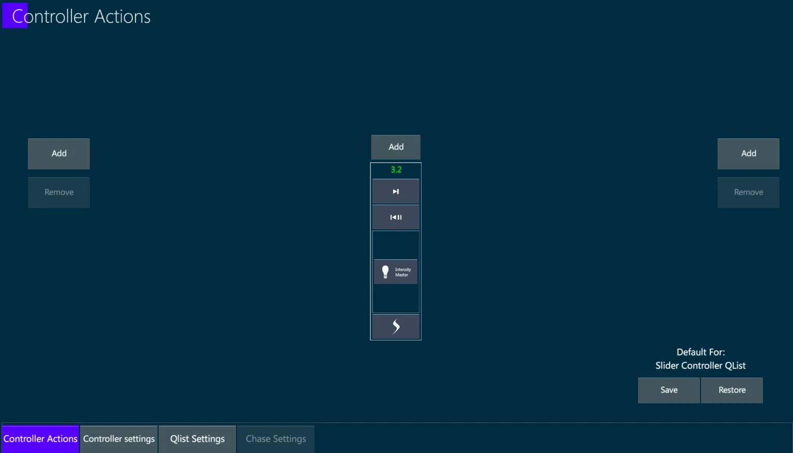
Assign Buttons and Slider Behavior:
- Press [SETTINGS] [HERE] to any button of the controller that has an object assigned to it - The Controller Actions popup will appear.
Alternatively, tap any of the controller Playback Status on the monitor.
Alternatively, press [Play-B] [#.#] [SETTINGS] on the hardkeys.
Tap one of the assignable {Button} or {Slider} - A context sensitive drop down menu based on the object assigned and the specific button selected will appear.
Choose a Control behavior from the menu.
👉 The actions configured in the controller actions popup can be saved ad default, overwriting the current controller default settings, by tapping {Save} or Restored to default, defined by the controller default settings, by tapping {Restore}
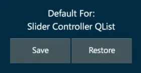
Assignable Button Behavior:
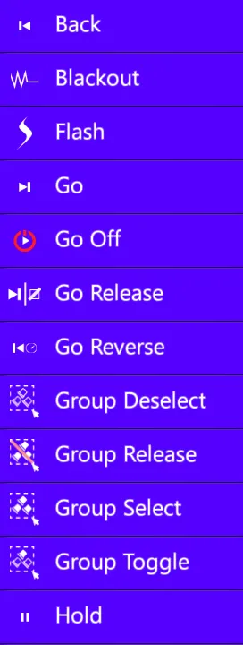
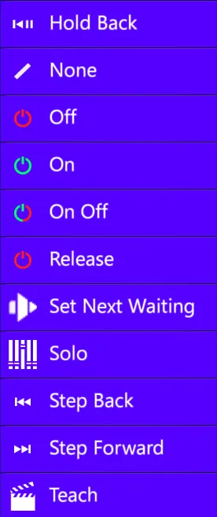
Blackout - Disables the Button.
Back - Fades to the previous Cue in Back Time.
Flash - Brings the Intensity to 100%.
Go - Fades to the next Cue in Cue Time.
Go Release - Toggles between Go and Release commands in Cue Time and Release Time.
Go Reverse - Fades to the previous Cue in Cue Time.
Group Deselect - Deselects the Fixtures currently activated from the Controller.
Group Release - Releases the Fixtures currently activated from the Controller.
Group Select - Selects the Fixtures currently activated from the Controller.
Hold - Pauses the fade.
Hold Back - Pauses the fade if it is running, makes a Back command if the fade is static.
None - Disables the Button.
Off - Makes a Release command in Cut Time.
On - Makes a Go command in Cut Time.
On Off - Toggles between Go and Release in Cut Time.
Release - Releases the controller in Release Time.
Solo - Turns off the intensity parameters on all the other controllers.
Step Back - Fades to the previous Cue in Cut Time.
Step Forward - Fades to the Next Cue in Cut Time.
Teach - Adjusts the Rate of Effects and Chasers based on the Tap Beat press timing.
Assignable Slider Behavior:
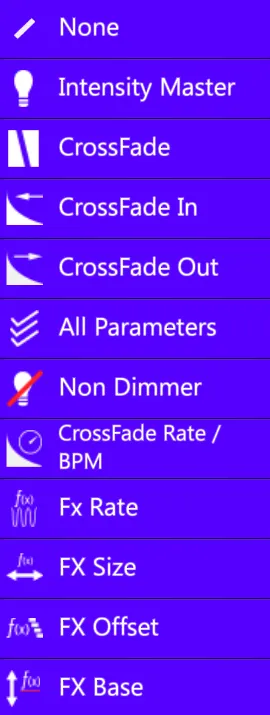
None - Disables the Fader.
Intensity Master - Controls the Dimmer or Virtual Dimmer parameter of the Cue/Scene.
Crossfade - Acts as a single crossfader.
Crossfade In - Acts as the In crossfader of a dipless crossfader pair.
Crossfade Out - Acts as the Out crossfader of a dipless crossfader pair.
All Parameters - Controls all the parameters of the Cue/Scene.
Non Dimmer - Controls all the parameters except the Dimmer of the Cue/Scene.
Crossfade Rate / BPM - Proportionally adjusts the Rate of the Chaser.
FX Rate - Proportionally adjusts the Rate of the running Effects.
FX Size - Proportionally adjusts the Size of the running Effects.
FX Offset - Proportionally adjusts the Offset of the running Effects.
FX Base - Proportionally adjusts the Base of the running Effects.
Submaster - Turns the Scene into a Submaster of the fixtures involved. (available only for Scenes and Submaster)
9.4.4 Controller Settings
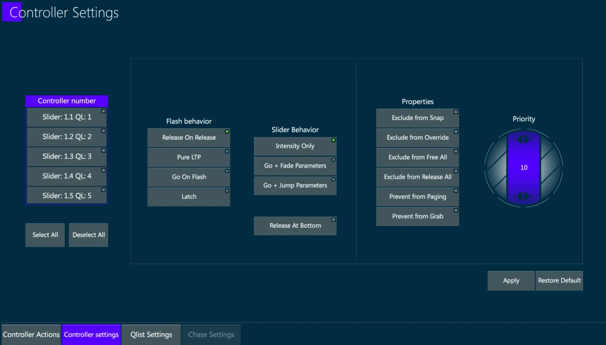
The left column allows to select one or more controllers to be configured.
If NO controllers are selected, the popup turns to the Default Controller Settings.
Flash behavior
Options to set the behavior of the flash button:
Release On Release
Pure LTP
Go On Flash
Latch
Slider behavior
Options to set the behavior of the slider:
Intensity Only
Go + Fade Parameters
Go + Jump Parameters
Release At Bottom
Properties
Options to set the properties of the controller:
Exclude from Snap
Exclude from Override
Exclude from Free All
Exclude from Release All
Prevent from Paging
Prevent from Grab
👉 The settings configured in the controller settings popup can be applied by tapping {Apply} or restored by tapping {Restore to Default}.
Priority:
Vibe keeps an LTP priority list of which controllers own parameters and the order in which they were asserted. Every time a controller is turned on, its parameters are asserted and the controller moves to the top of the list. Parameters that are still on active controllers but are currently overridden are said to be “robbed”. When the controller that owns the parameter is released from the stage, the last active controller to own the robbed parameter is now moved back to the top of the list and reasserted the parameter to the stage.
This feature is very useful for “On the Fly” programming where a main Qlist may be temporarily overridden by Qkeys or Controllers and quickly restored when they are released.
The Editor is always the highest propriety and will override any values from controllers until they are released or The Editor is reset.
Controllers assigned the same Priority number will be LTP among themselves.
Controllers with lower Priority will be overridden by controllers with higher Priority.
Controllers with higher Priority cannot be overridden by controllers with lower Priority.
Assign Priority:
Tap the top area of a controller display, the Settings popup will open.
Select the {Controller Settings} Tab.
OR
Press [SETTINGS] [HERE] to any controller button, the Settings popup will open.
Select the {Controller Settings} Tab.
Rotate the virtual wheel to the desired Priority Group number or tap the center of the wheel until it turns red and type a Priority number from 0 to 999.
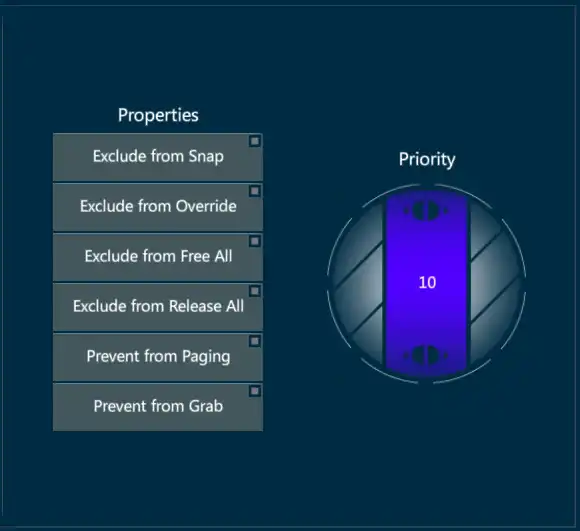
Move Controllers
A controller can be moved to any other, even if it’s a different type of controller.
The controller will be moved with all its settings and state, including intensity value etc.
[MOVE], Source selection (Occupied controllers), Target selection (Empty controller)
[MOVE], Source selection (Occupied controllers), @, Target selection (Any controller)
[PLAYBACK], [#], [MOVE], [PLAYBACK], [#], [PASTE]
9.4.5 Object Settings
The Object Settings popups depend on the object type.
The hardkeys method to open every object settings popup is: [OBJECT] [#] [SETTINGS]
where “Object” stands for Qlist, Cue, Scene, Library, Group, Snap, Macro
The softkeys method to open every object settings popup is:
- Long Tap on the target object’s Softkey (some options will appear) and move the finger on the Settings key.
If an object is loaded on a controller, also a direct way to access its settings is available.
The controllers method to open every object settings popup is:
- Tap on the object name into the Playback Status box.
Qlist Settings
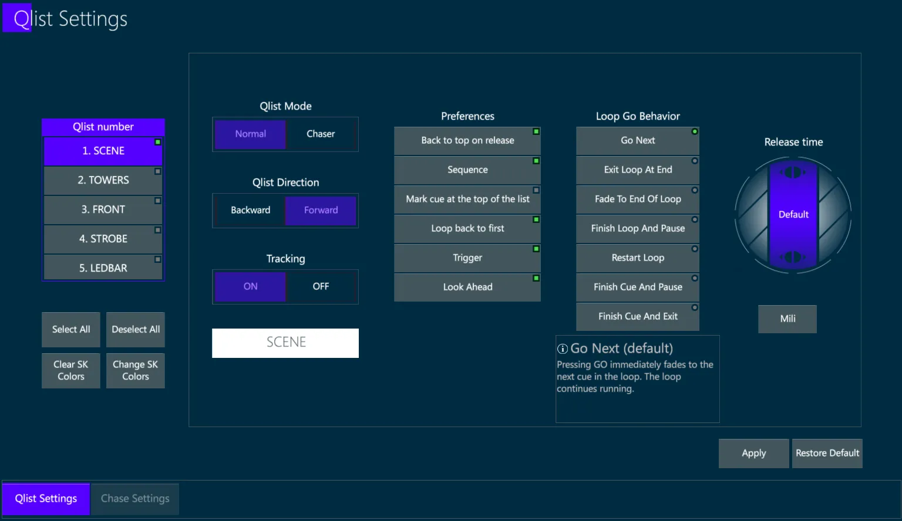
The first column allows to select one or more Qlists to be configured.
If NO Qlists are selected, the popup turns to the Default Qlist Settings.
The second column contains the Qlist Settings for:
Qlist Mode - Turn a Normal list of Cues into a Chaser and viceversa.
Qlist Direction - Toggle between Forward and Backward.
Tracking - Toggle between On and Off.
Qlist Name - Labels the Qlist, same as with the syntax [QLIST] [#] [TEXT] or with the long tap on the Qlist softkey and then the Text option.
The third column contains the Qlist Preferences:
Back to Top on release - Rollbacks to the first Cue when the controller is released.
Sequence - Enables/Disables the sequence of Cues.
Mark Cue at the top of the list - Adds a prepositioning Cue before the first Cue.
Loop back to first - A Go command on the last Cue will fade to the first Cue.
Trigger - Enables/Disables the Triggers of objects such as Macros linked to the Cues.
Look Ahead - Enables/Disables the Look Ahead option of the Qlist, with priority over the System Settings.
The fourth column contains the option for the Loop Go Behavior:
Go Next
Exit Loop At End
Fade To End Of Loop
Finish Loop And Pause
Restart Loop
Finish Cue And Pause
Finish Cue And Exit
Each of these options has a short explanation in the box below the column.
The Release Time Wheel may be used to set a specific Release Time for the Qlist, with priority over the System Settings.
👉 If changes are made to individual controller Qlist Settings, those changes stay with the controller and are not copied or updated to other controllers with the same Qlist.
👉 If it is desirable to update what will be copied to future assignments of the Qlist, toggle {Save to Qlist} On. Changes made to the current Qlist Settings will then be passed along the further Qlist assignments on other Controllers, in place of the Default Qlist Settings.
👉 Qlist properties may be restored to their user defaults by tapping the {Restore Default} key.
Chase Settings
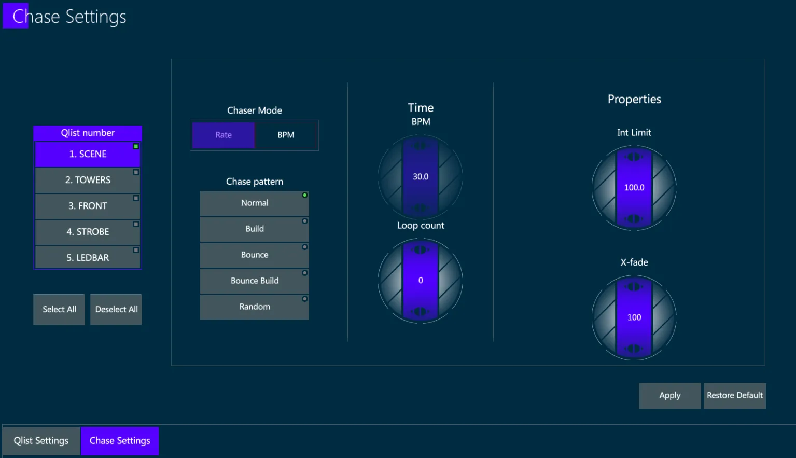
Chase Settings Tab is enabled only when the selected Qlist is in Chaser Mode.
The first column allows to select one or more Chasers to be configured.
If NO Chasers are selected, the popup turns to the Default Chaser Settings (not implemented yet).
The second column contains the Chaser Settings for:
Chaser Mode - Toggle the Chaser Time between Rate and BPM.
Chase Pattern - Defines the Chase behavior affecting the order of the Cues.
The third column contains the Chaser Time Preferences:
BPM - Sets the BPM of the fades, only enabled when the Chaser Mode is BPM.
Loop Count - Sets the number of loops that the Chaser will execute. If the Loop Count is 0, the quantity of Loops will be infinite.
The fourth column contains the Chaser Properties:
Int Limit - Limits the Intensity of the Dimmer parameters.
X-fade - Sets the crossfade between the Cues from 100% (full fade) to 0% (step fade)
👉 The same options to {Save to Qlist} and {Restore Default} of the Qlist Settings tab, are also available in the Chase Settings tab.
Cue Settings
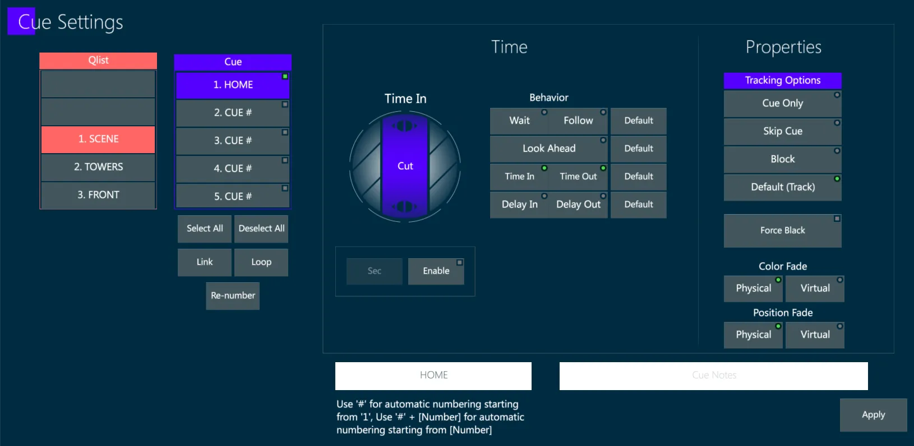
Cue Settings popup opens by tapping on the Cue name into the Playback Status box.
The first column allows to select the Qlist containing the Cue to be configured.
The second column allows to select one or more Cues to be configured.
If NO Cues are selected, the popup turns to the Default Cue Settings.
The buttons under the column are used to:
Re-number the selected Cues.
Link the selected Cue to another.
Loop the selected Cue to another, defining the number of loops to be executed.
The third column contains the Cue Time Settings.
The behavior lists all the timing possibilities and the Time wheel allows to adjust the selected ones.
The Default buttons bring the time back to the default setting.
The fourth column contains the Cue Properties.
Tracking Options define the tracking behavior of the selected Cue, that can be:
Cue Only
Skip Cue
Block Cue
Default (Track)
Specific buttons are used to:
Force Black - Enable/Disable a Force Black Cue before the selected Cue.
Color Fade and Position Fade - Toggle between Physical and Virtual to define is the fade to the selected Cue will involve the physical or the virtual parameters, respectively regarding the Color and the Position.
The White fields under the columns may be used to write the Cue’s name and the Cue’s notes.
👉 If the Cue selection is changed after editing the Cue settings, remember to press the APPLY button to store the changes, otherwise a popup will ask if you prefer to discard them.
👉 Differently from the Qlist and Chase Settings, that can be stored only on the controller, the Cue Settings are directly stored to the Cue and kept in case of further assignments.
Scene Settings
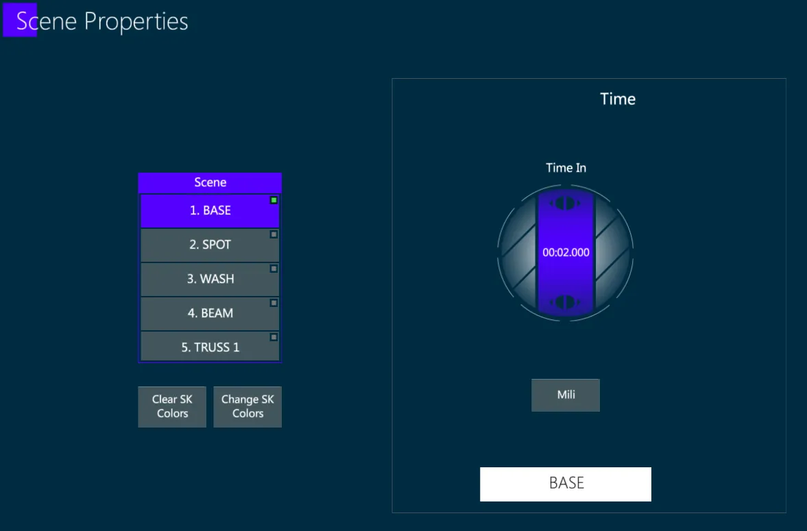
The first column allows to select one or more Scenes to be configured.
The second column contains the Scene Time Settings.
- Time In may be adjusted with the wheel.
The White field under the wheel may be used to write the Scene’s name.
👉 Differently from the Qlist and Chase Settings, that can be stored only on the controller, the Scene Settings are directly stored to the Scene, like the Cue Settings, and kept in case of further assignments.
9.4.6 Compound Controllers
Controllers may be extended in width and height to make larger compound controllers.
Compound controllers are used to expand the playback possibilities by getting more faders and buttons operating on the same object, so there can be more actions assigned.
There is no limit as to how wide a controller may be, but for practical purposes, a limit of 6 controllers per content is suggested.
For example a single Qlist can be assigned to two Sliders and two Qkeys and set the control of the controllers in the following way:
1st Slider: Intensity, Go, Back, Flash
2nd Slider: Crossfade, Step Forward, Step Back, Blackout
1st Qkey: FX Rate, On
2nd Qkey: FX Size, Off
Other useful examples of compound controllers combinations are:
creating additional Crossfader pairs,
adding Rate control to Chasers,
setting Group Selection, Deselection and Release to Submasters,
and many more…
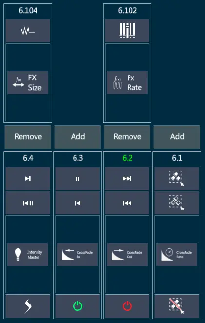
If Playback slider controllers and Qkey buttons are linked to the same object, it could be comfortable to synchronize the paging of Sliders and Qkeys.
This is done by pressing [VIBE] button together with the Up/Down paging buttons of either Playbacks or Qkeys.
9.4.7 Playback Master
A Playback Master is a controller that masters other controllers.
The LED and background color for playback master is blue.
Any key command on the master will be triggered to the controlled Playbacks (GO, BACK, etc.).
Any fader behavior and movement on the master will be triggered to the controlled Playbacks (Intensity, Rate, etc.).
Playback Masters are stored in snaps.
Create a PB Master
Press [PLAYBACK]
Tap [MASTER] on the toolbar
Press any of keys of the playbacks to be mastered
Press [STORE]
Press any key of the controller that becomes the Playback Master.
Not to be confused with the Master Controller, that can be only one at a time, the Playback Masters can be as many as needed.
Edit PB Master Settings
Playback Masters have a specific Master Settings tab in their Controller Settings popup.
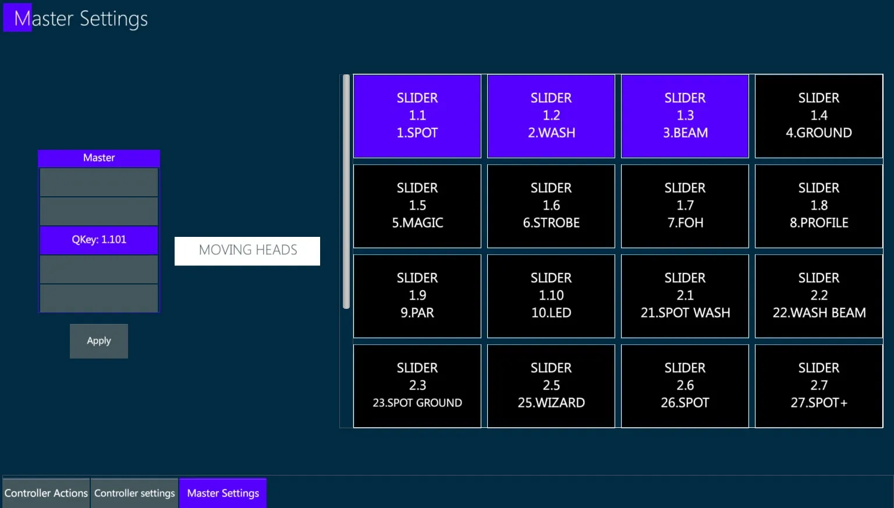
From the Master Settings the Playback Masters may be:
Renamed, which is very useful when more Playback Masters are in use
Edited, by selecting and deselecting the playbacks that have to be mastered
9.5 Live Controller
The Live Controller View is used to check and follow the playback of the Qlist, Chase or Scene loaded on the target controller.
As many Live Controller Views as needed may be added to the layout, and each of them can be focused on a specific controller.
The Header of the view reports the controller that is currently shown and the name of the object loaded on that controller.
The List button enables/disables the automatic scrolling of the Cues.
The Arrow button shows or hides the empty columns (fields with no data).
The Chain button opens the Controller Selection popup.
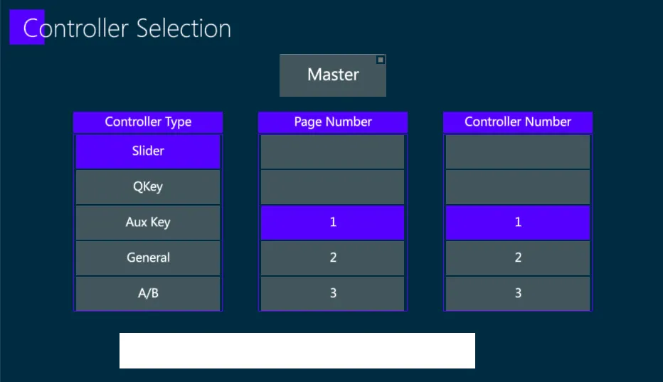
The target controller that needs to be shown on the view can be selected from the list on the popup, divided per Controller Type, Page Number and Controller Number.
The Master key, when enabled, makes the Live Controller View follow the Master Controller.
The Tabs on the bottom of the Live Controller view switch between:
- Cue Sheet - shows all the Cue’s numbers, names, times and notes.
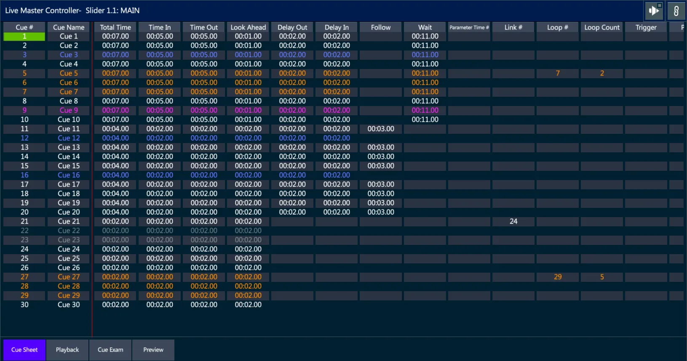
👉 Cue Sheet may be used to directly access the Cue’s Timing popup by tapping on the desired time cell, either to rename the Cues by tammping on the Cue Name cell and digit the text on the keyboard.
- Playback - shows all the Controller’s settings, actions and state.
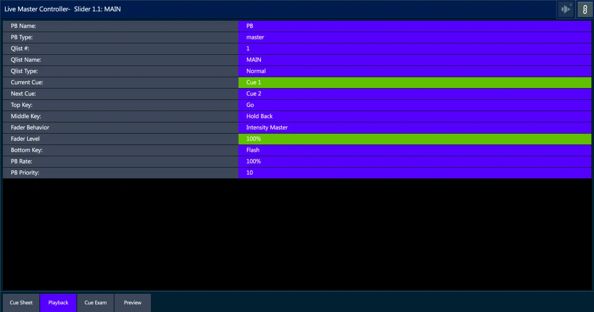
- Cue Exam - shows a table of the values contained in the current Cue, listed by Fixture.
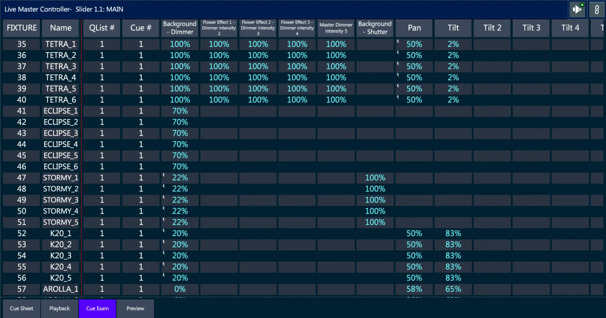
- Preview - shows a table of the values contained in the next Cue, listed by Fixture.
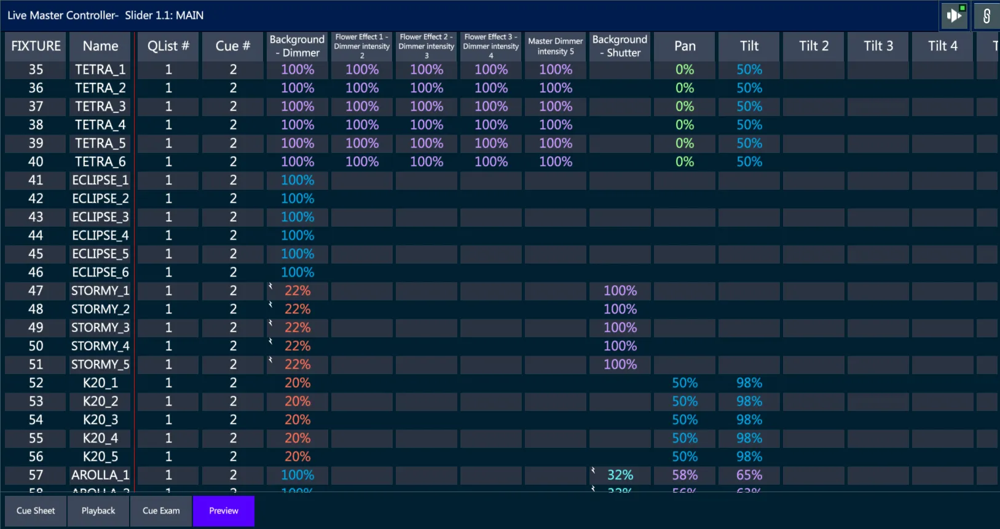
9.6 Rate
Rate and Teach are the features designed to directly control the fading and looping speed of chasers and effects, and are very useful for live lighting playback.
Rate operates as a multiplier to linearly adjust the stored timing.
Rate can be assigned as a fader Action to any controller, splitted between Crossfade Rate (used with Chasers) and FX Rate (used with Effects).
Moreover the Rate button on the Controller Mode Keys sets all the sliders to control the rate.
Teach operates as a “tap beat” button to adjust the rate by giving timed inputs, according to the sound rhythm.
Teach can be assigned as a button Action to any controller and it affects both Chasers and Effects.
Additionally the Vibe panel offers two buttons dedicated to the Rate and Teach, used to open the Rate Picker on the Smart Screen and manage many playback rates at a time.
This screen view is very helpful in fine tuning chases and effects to synchronize with music or to improvise performances “on the fly”.
The Rate Screen operates outside of the editor and is non destructive. Changes made in the Rate Screen are not stored in cues but may be stored and recalled in Snaps.
Press the [RATE] button to open the Rate Picker on the Smart Screen.
Smart Screen - Rate Picker
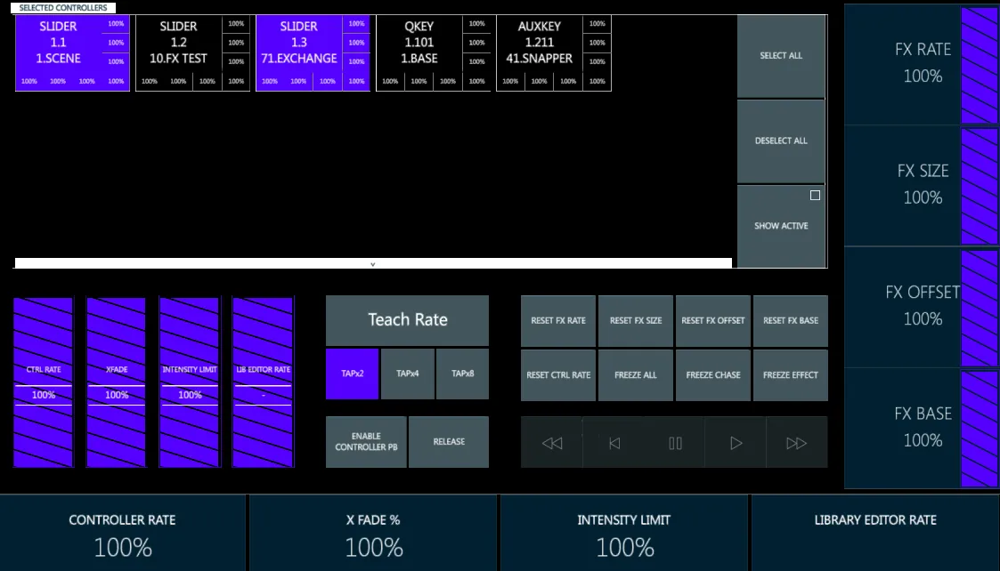
9.6.1 Rate Screen
Press [RATE]
All loaded controllers will appear in the “Selected Controllers” section of the smart screen. All loaded controllers will be shown and all controllers with Chasers or Effects running will be selected.
Pressing any physical or virtual [Key] of a controller, or tapping on the controller’s box in the Rate screen, will deselect all other controllers.
Additional controllers may be toggled on or off as desired, they will appear in the Selected Controllers display.
{Select All} will select all loaded controllers on the rate control.
{Deselect All} will deselect all selected controllers from the rate control
{Show Active} will remove all controllers in the “Selected Controllers” section that are not currently under the control of the rate wheels.
Encoder wheels
Wheel 1 - {Controller Rate} speeds up or slows down the cross fade rate of the controller. This may be used for cue transitions, chases, or effects. Range: 0% (Stopped) ⟶ 3000% (effectively cut time)
Wheel 2 - {X Fade %} adjusts the “fade vs jump” percent of a chaser. Range: 0% (full jump) ⟶ 100% (full cross fade)
Wheel 3 - {Intensity Limit} proportionally limits the intensity output of a controller. Range 0% (no intensity output) ⟶ 100% {full intensity}
Wheel 4 - {Library Editor Rate} adjusts the speed that Libraries are faded into the editor. Not implemented yet.
Four virtual sliders on the Rate Picker allow the same control of the encoder wheels.
Extra wheels
Wheel 1 - {FX Rate} adjusts the rate of effects that are running on the selected controllers.
Wheel 2 - {FX Size} adjusts the size of effects that are running on the selected controllers.
Wheel 3 - {FX Offset} adjusts the offset (Spread) of effects that are running on the selected controllers.
Wheel 3 - {FX Base} adjusts the base values (start point) of parameters that are in running effects on the selected controllers.
Reset keys
{Reset FX Rate} - Resets controlled FX rates back to their stored values.
{Reset FX Size} - Resets controlled size of effects back to their stored values.
{Reset FX Offset} - Resets controlled offset of effects back to their stored values.
{Reset FX Base} - Resets controlled effects base values back to their stored values.
{Reset Ctrl Rate} - Resets all controller rates back to their default of 100%.
Freeze keys
{Freeze All} - Pauses all running chases and effects until the {Freeze All} key is toggled again.
{Freeze Chase} - Pauses all running chases until the {Freeze Chase} key is toggled again.
{Freeze Effect} - Pauses all running effects until the {Freeze Effect} key is toggled again.
Freeze only affects chases and effects at the playback level, they are not released from the cue.
To indentify the Freezed Controllers, an indicator will appear on the controller’s Status Box in place of the Rate value:
FA for Freezed All
FC for Freezed Chase
FE for Freezed Effect
Transport Bar
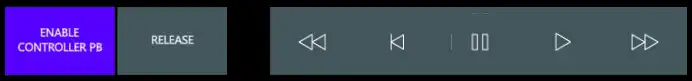
When actively in the Rate Screen, physical controller keys are mapped to the rate interface and may not be used to activate Qlists, cues, or scenes. As an alternative, the transport bar may be used. To use the transport bar:
Tap {Enable Controller PB} to activate the Transport Bar. (The controller keys are now active with the assigned functions).
Select the controllers to control with the bar by toggling any of the controller’s physical control keys
Use the transport Bar buttons to:
{<<} Step Back
{|<} Back
{||} Hold (Pause)
{>} Go
{>>} Step Forward
- {Release} may be tapped at any time to deactivate the selected controllers using release time.
9.6.2 Teach Rate
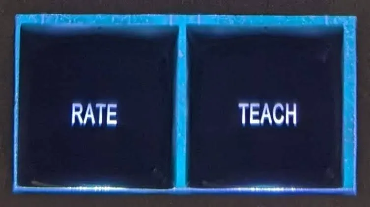
Teach may be used with the button on the Rate screen or with the [TEACH] button on the panel.
- Set the number of taps to be averaged:
{TAPx2} for 2 taps - [TEACH] button’s LED becomes Red
{TAPx4} for 4 taps - [TEACH] button’s LED becomes Green
{TAPx8} for 8 taps - [TEACH] button’s LED becomes Blue
- Tap {Teach Rate} or press [TEACH] the number of times defined.
{Teach Rate} will show the number of taps received.
[TEACH] will blink until the total number of taps is reached.
- The selected controllers’ rate will change accordingly to the average time between the pressures of Teach.
[SHIFT] + [TEACH] allows to switch between 2, 4 and 8 taps with no need to open the Rate Screen.
9.7 Snap
Snaps are Snapshots of the Playback configuration, they capture and record the current state of all Controllers including:
Current Page
Current Master Controller
Loaded Qlist
Active Cue
Slider position
Priority list (stack) at the time of the snapshot
Controller priority number
Controller slider and button assignments
Linked controllers
Rate overrides
Effect Size overrides
Effect Offset overrides
Effect Base overrides
👉 Take a Snap of the Vibe controllers’ live state, trigger it manually or with a cue to restore the playback configuration.
9.7.1 Store Snaps
Make sure that all controllers on all pages are setup, loaded, and activated exactly as you want them to be restored.
Press [STORE] [HERE] to any available {Snap} softkey.
OR Press [SNAP] [#] [STORE].
- Press [TEXT] to open the Text popup and label the Snap - this is only valid directly after storing the Snap, otherwise [SNAP] [#] [TEXT] may be used at any time.
Snaps may be viewed on the Exam view:
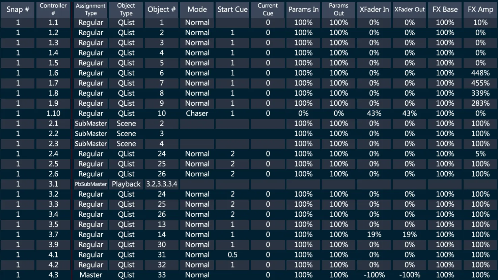
9.7.2 Trigger Snaps
Snaps may be directly triggered using the keypad or Snap Softkeys.
Trigger a Snap using the keypad:
- [SNAP] [#] [ENTER]
Trigger a Snap using Snap softkeys:
- Tap the required {SNAP} softkey.
Trigger a Snap from a Qkey:
Not implemented yet.
Assign the Snap to the Qkey by pressing [SNAP] [#] [HERE] to any Qkey button.
Press the Qkey button to trigger.
Snaps on Vibe are absolute: all controllers are replaced with new loaded objects and controllers without new loaded objects are cleared.
Future releases will have an option for “Page Holdover” where active objects will not be replaced until the controller is released.
Additional Snap Settings:
These additional options can be enabled or disabled in the System Settings on Defaults tab.
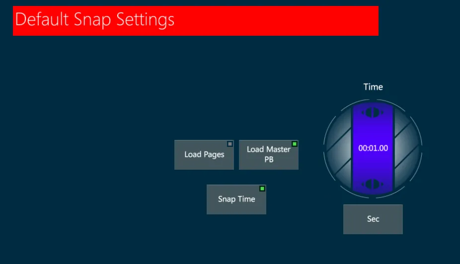
Load Pages - Restore the controllers to the page they were on when the Snap was stored.
Load Master PB - Restore the assignment of the Master Controller to the controller it was assigned to when the Snap was stored.
Snap Time - Snaps will be loaded in the Time stored, or in the default Snap Time if there is not a specific time stored.
Controller Settings Properties that affect Snaps:
Exclude from Snap - Controller will not be included when Snaps are stored.
Exclude from Override - Controller will ignore the Snap activation and will not be overridden.
9.7.3 Attach Snaps
Snaps may be attached and triggered from Cues. Snaps are triggered when:
The Qlist is advanced to the cue with the Snap trigger.
[GOTO] commands are used.
[CUE] [#] [GO] is used.
Back commands will not trigger Snaps.
Attach a Snap to a Cue:
- [CUE] [#] [SNAP] [#] [STORE]
Release a specific Snap from a Cue:
- [CUE] [#] [SNAP] [#] [RELEASE]
Release all Macros from a Cue:
- [CUE] [#] [SNAP] [RELEASE]
Disable triggers:
- Tap the controller display header for the Qlist that contains Macro or Snap triggers
OR [SETTINGS] [HERE] to any controller button and select the Qlist Properties tab.
- The Qlist Properties popup will appear.
- Deselect the {Trigger} button.
- Triggering will be disabled for the Qlist assigned to that specific controller.
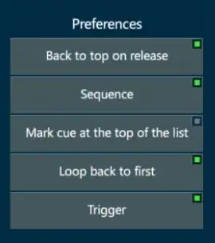
9.7.4 Snap Time
Snaps may be assigned a time to fade in their transitions.
When a Snap is triggered the current playback status will fade to the status stored into the Snap in the assigned Snap time.
Set a Snap Time:
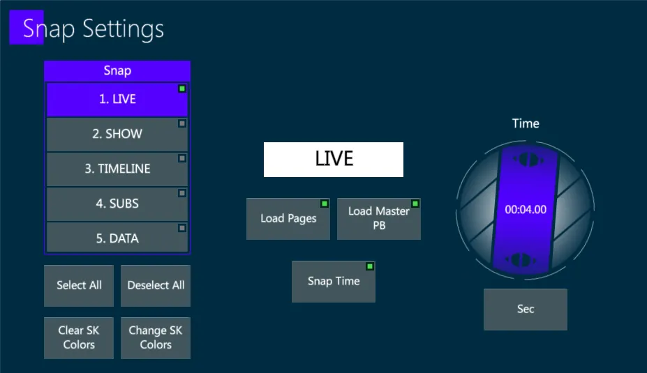
Press [SNAP] [#] [SETTINGS] - The Snap Settings popup will appear.
Toggle the {Snap Time} key On.
Adjust the Snap Time with the Virtual Time Wheel.
Close the popup by using [ENTER] or tapping Apply.
9.8 Macro
Macros are custom command sequences that can be recorded in the Vibe Show for different purposes, usually in order to automatize frequently used operations, which may be stored on a dedicated softkey library and then triggered manually, by tapping the softkey, or directly from a Cue at the moment the GO command is executed.
👉 Teach a Macro to include any sequence of Vibe commands, trigger it manually or with a cue to expand the program features.
9.8.1 Teach Macro
Macros can be created using the Teach Macro recorder. In future releases this will expand to include manually editable macros, where the macro time is automatically recorded with macros and the user may decide whether to enable time or ignore it.
Store a Macro:
Press [TEACH] - Vibe will enter Teach Macro record mode and the [TEACH] key will flash red.
Press editor keys or controller buttons as required.
Press [TEACH] again to terminate the recording - the [TEACH] key will stop flashing and the key presses are now stored in the Macro clipboard.
Press [STORE] [HERE] to a Macro Softkey.
OR Press [MACRO] [#] [STORE] - The Macro is now stored.
- Press [TEXT] to open the Text popup and label the Macro - this is only valid directly after storing the Macro, otherwise [MACRO] [#] [TEXT] may be used at any time.
Macros may be viewed on the Exam view:
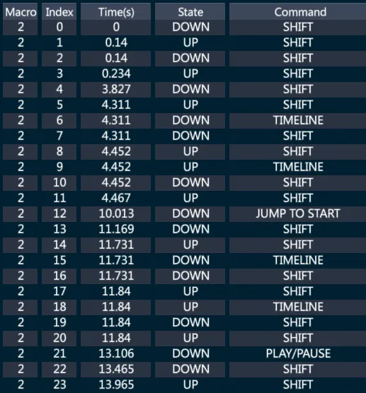
9.8.2 Trigger Macro
Macros may be directly triggered using the keypad or the Macro Softkeys.
Trigger a Macro using the keypad:
- [MACRO] [#] [ENTER]
Trigger a Macro using Macro Softkeys:
- Tap the required {Macro} Softkey.
Trigger a Macro from a Qkey:
Assign the Macro to the Qkey by pressing [MACRO] [#] [HERE] to any Qkey button.
Press the Qkey button to trigger.
9.8.3 Attach Macro
Macros may be attached and triggered from Cues. Macros are triggered when:
The Qlist is advanced to the cue with the trigger.
[GOTO] commands are used.
[CUE] [#] [GO] is used.
Back commands will not trigger Macros.
Attach a Macro to a Cue:
- [CUE] [#] [MACRO] [#] [STORE]
Release a Macro from a Cue:
- [CUE] [#] [MACRO] [#] [RELEASE]
Release all Macros from a Cue:
- [CUE] [#] [MACRO] [RELEASE]
Disable triggers:
- Tap the controller display header for the Qlist that contains Macro or Snap triggers
OR [SETTINGS] [HERE] to any controller button and select the Qlist Properties tab.
- The Qlist Properties popup will appear.
- Deselect the {Trigger} button.
- Triggering will be disabled for the Qlist assigned to that specific controller.
9.9 Timeline
Timelines permit playback automation by receiving external Time Code protocols and MIDI signals to trigger the controllers.
👉 Record a Vibe Timeline to automatize the show playback, based on an audio track or an external timecode signal.
Vibe uses a philosophy of Timeline Tracks.
There is no limit to the number of Timeline Tracks that may be recorded in a show.
Timelines can be added to a Timeline View and played simultaneously following an internal or external Time Code.
Vibe can read the following Time Code sources:
Virtual Local - Internally generated Time Code.
Physical Local - SMPTE or MIDI Time Code received at the SMPTE audio input or via the DIN 5 pin MIDI connector on the back of the console.
USB MIDI class compliant Time Code.
MIDI over Ethernet via Compulite VC protocol.
Input sources from remote Multi-User consoles and devices
Vibe can record data from multiple controllers simultaneously.
Additional timeline subtracks will be created on a per controller basis.
Vibe also supports fader automation on timeline tracks.
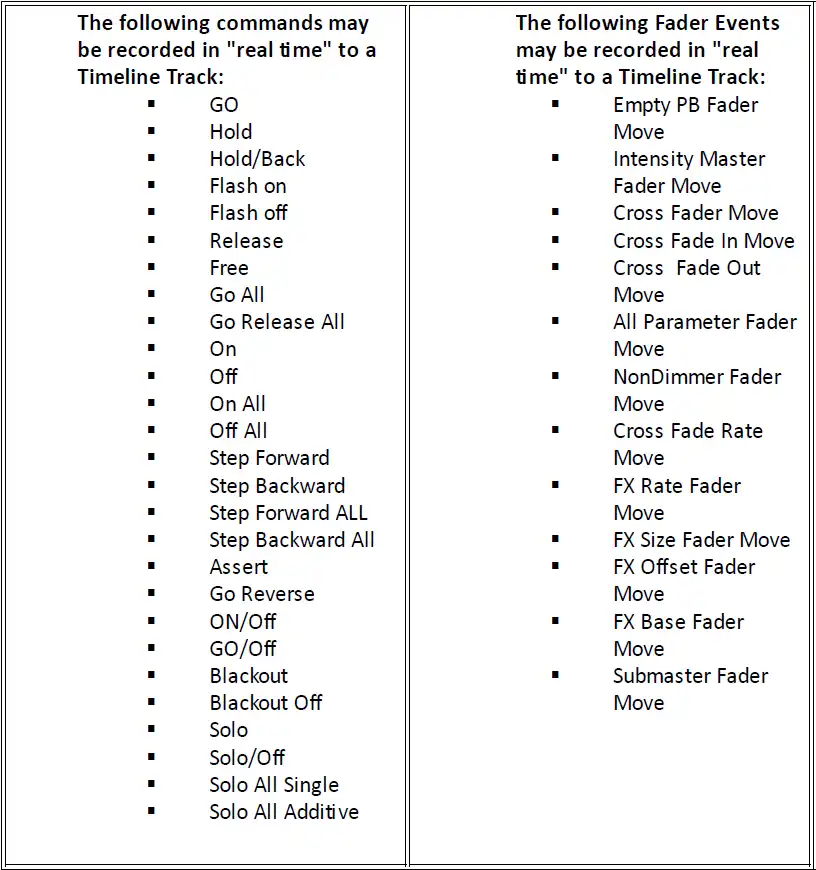
Vibe automatically matches frame rates to the incoming source.
Supported frame rates are:
24 FPS
25 FPS
29.97 FPS drop-frame
30 FPS
9.9.1 View
If no layout contains a Timeline view, the first step to create a Timeline is to add a Timeline View to the layout.
Unlimited Timeline views may be created and each Timeline View may have its own Time Code.
As long as more Timeline views are set on different clock sources, they can load different Timelines and moved independently.
If Timeline views are based on the same clock source, they will be synchronized and will load the same tracks and options.
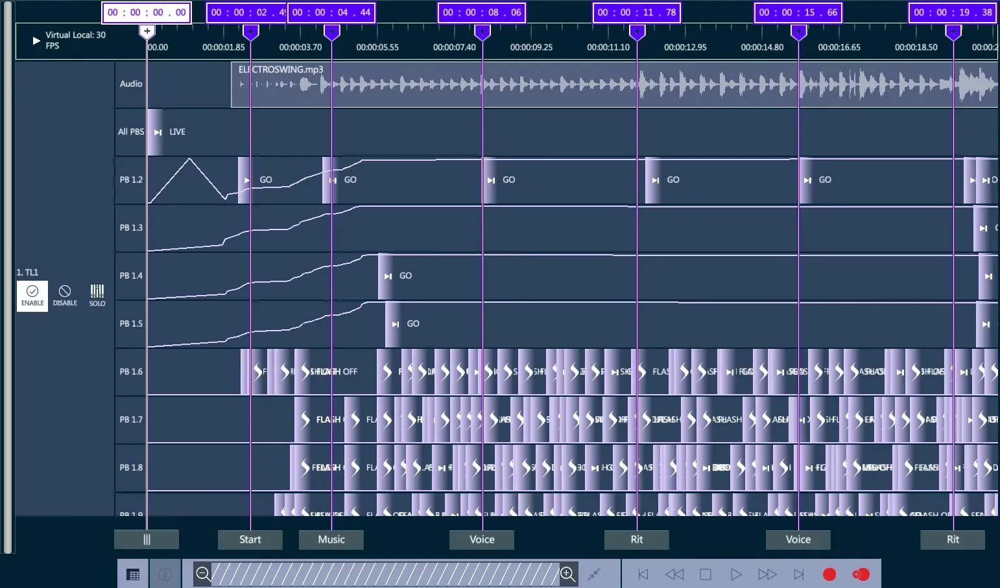
The Timeline view shows all the active Timelines and allows to enable and disable them, or play in “solo” mode.
Use the Timeline view’s menu to load the Timelines on the view, as well as to create, edit or delete Timelines.
9.9.2 Record
After a Timeline View has been created, timeline tracks may be recorded. Timeline events may be recorded in “real time” and then edited afterwards.
Create a timeline track:
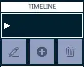
Open the Timeline View menu.
Tap + and the “Create New Timeline” popup will open.
Select a timeline number and name.
Choose Start from {Blank} or {Existing} Timeline and Apply.
Tap the {Select Clock} drop down in the top left corner and select the timecode source.
Virtual Local - Use internal timecode clock.
Physical Local - Use the SMPTE or MTC timecode inputs on the console.
Additional options will populate the list depending on the interfaced timecode device.
- Enable the red {Record} button or the {+ Record} button.
{Record} overwrites the existing events.
{+ Record} adds new events to the existing ones.
If using internal TC, press Play.
If using external TC start the timecode source.
The timeline will start to move and all controller presses and motorized fader moves will now be recorded on sub-tracks, one for each controller’s events.
When all recording is done, either stop the external timecode source or press the Stop button if the clock source is internal.
👉 Disable the Record button to prevent accidental overwrite of events.
Trigger a Timeline
Timelines can be triggered and zoomed via the Timeline view’s transport bar.
Timeline commands can be also triggered via the Editor Toolbar in Program and Playback pages.
Grid View Filters
Switch from the Graphical to the Grid view and viceversa with the toggle button on the control bar.
In the grid view it is possible to see all events from all timelines or to filter events by timeline and see only its own events.
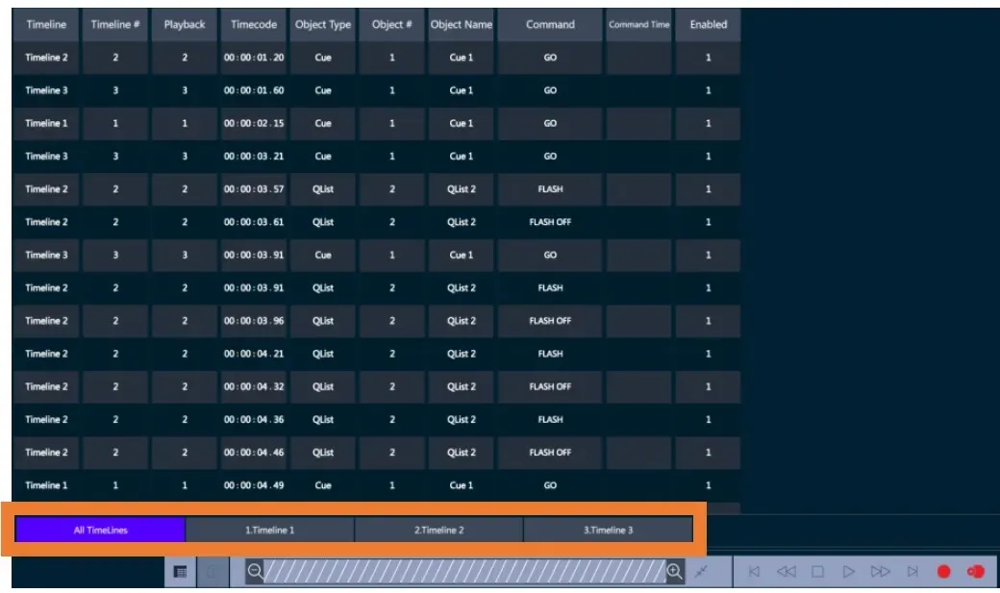
9.9.3 Commands
These commands will affect the selected timelines in the sequence. Some sequences will affect the selected timelines regardless of their current view and some will affect them on the “Active Timeline View”.
Commands for the Timeline
Go to idle state
Press Timeline # (+#, ⟶#, etc.)
The Editor Toolbar shows the available commands:
Sequence may also end with:
Store – will create the timelines if they are not already created
Delete – will delete the timelines if they exist
Text – will open text box to give a name to the selected timelines
Copy – will add the timelines to the clipboard
Paste – will paste the copied timelines from the clipboard
If the source is external MIDI or SMPTE timecode, press [Play] on the timecode source. The events will synchronize to the source timecode.
If the source is internal, tap {Play} on the timecode view’s control bar. The internal timecode will start and events will execute.
The control bar may be used to stop and rewind events when the source is internal.
Record may be enabled and disabled “on the fly” to overwrite sections of a timeline track.
forwards and backward using the Set Delta pop-up in the Actions drop down.
To trigger Timeline commands via the panel and Editor Toolbar there is an “Active Timeline View” indicator:
If there are more than 1 Timeline Views on the layout, only 1 of them can be the “Active” one.
Tapping the {ACTIVE} key on the header of the view’s menu will select the current view as the “Active” and will remove the Active sign from the other views.
Each Timeline View has an active clock. All Timeline Views that have the same clock will be automatically synced.
Commands for the Active Timeline
These commands will affect the Active Timeline View.
Go to idle state
Press Timeline from the panel
You see on the Editor Toolbar the available commands:
9.9.4 Gestures
Use the following gestures on the timeline view to manage the events:
Tap on a single event – toggles the event selection
Tap on a playback box – toggles the playback selection
Tap on a marker – toggles the marker selection
Rectangle draw using touch and drag – toggles all the events inside the rectangle
Double-tap an empty area – clear the selection
Double tap on the time bar – sets the current time to the selected time
Long click an event and drag – moves the position of all the selected events
Double finger vertical scroll on the view – will scroll the Timelines
Double finger horizontal scroll on the time bar – will scroll the time bar
Selection can have only one type of objects at a time. Selecting a timeline object (i.e. Playback, Event, Marker…) will clear all other objects selections.
9.9.5 Markers
To aid in timeline navigation, Markers may be inserted.
To insert a marker:
Press the + at the desired location when the timeline is running. A marker will be inserted.
Press ⟵ to move backwards through the markers.
Press ⟶ to move forwards through the markers.
Press 🗑️ to delete a marker
In the Timeline view, markers can be moved by assigning a direct time, and they can be assigned a delta.
The Timeline Grid View shows the list of Markers on a dedicated tab, where they can be named. Markers’ names will appear also in the graphical view, on the bottom of the marker.
9.9.6 Move Selection
The Move Selection sub-menu offers options to set move the selected events.
It is possible to change selected event times via the physical wheels.
There are 2 new buttons to assign the delta time for the selected events to the physical wheel and then move it.
There are 2 physical wheels that are available for use:
The left one is for moving the selected events.
The right one is to change the time resolution for the current time movement.
9.9.7 Actions
The Actions sub-menu offers options to manage the selected events.
All the events can be moved on the timeline with drag&drop commands in the graphical view, or by assigning a different time in the grid bar.
The Actions menu includes the following actions that can be performed on the selected events:
Copy and Paste the selected events: the copied events will be pasted in the navigation bar’s position keeping their offset.
Enable and Disable the selected events: disabled events will be kept stored on the timeline but will not be triggered.
Hide Disabled: the disabled events will not be shown in the view.
Delete the selected events: events will be deleted from the timeline.
Reset Slider: the slider level will be set on the whole line at the assigned value.
Reset Slider Value from a playback will set it to a fixed value between zero and full.
To reset the slider value:
Open a timeline
Select the target playback
On the menu, open the Actions
Press Reset Slider
Assign the slider value on the virtual slider popup
9.9.8 TimeStamp
It is possible to view the timeline and events data in different time formats.
The default time format is milliseconds, but it is also possible to use FPS format.
The time format selection can be set on the Timestamp View sub-menu.
9.9.9 Actions History
All the actions performed on the Timeline View are listed on the bottom of the view’s menu, under the Actions History bar.
The {UNDO} and {REDO} keys allow stepping backwards and forward through the reported operations.
The Timeline Undo and Redo functions are independent from the Programming UNDO and [REDO] functions and will only apply to the operations made in the timeline view.
9.9.10 Audio Track
Timelines can load Audio Tracks in common file formats such as .mp3 and .wav.
To add an audio track to a timeline:
open the Audio section on the menu
tap ADD
select the target timeline on the selection popup and tap Apply
select the audio file on the load popup and tap Apply
The Audio Track will be loaded on the top line of the Timeline, showing the file name and the audio spectrum.
The Audio Track may be moved along the timeline in the same way the events are moved.
Multiple Audio Tracks may be added to the Audio line of the Timeline.
The Audio level may be adjusted with the horizontal bar in the view’s menu.